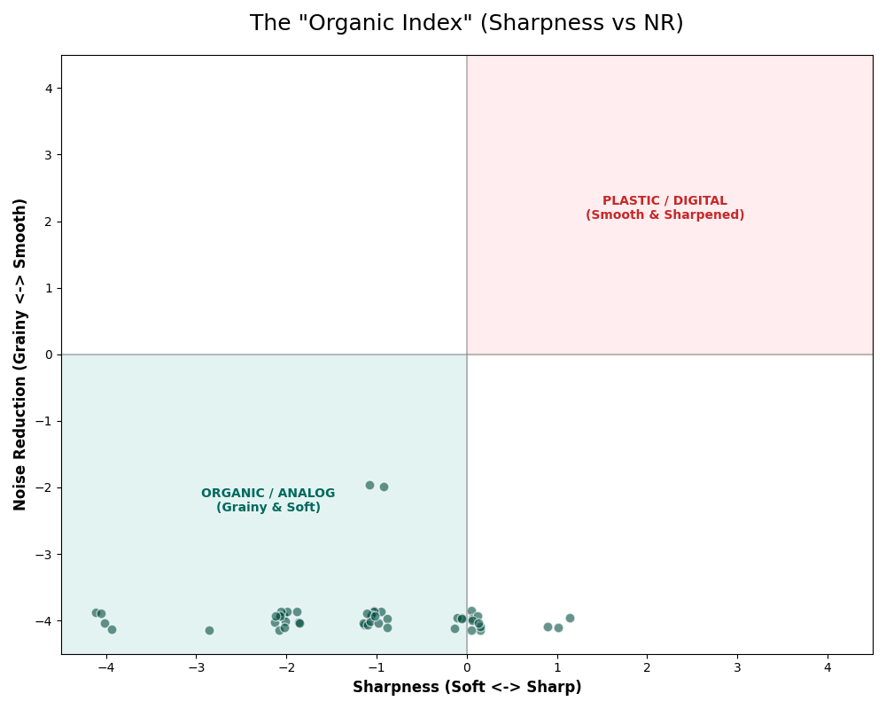

The Search for the "Soul" of a Photo
I analyzed over 240 film simulation recipes with the help of Antigravity AI to uncover the Likeability Index of the X100V & X100VI community. Instead of just averaging numbers, I identified the "Consensus Choice"—the exact settings that appear most frequently across all recipes.
This project is an attempt to map that desire. Why do we love the look of old film? Why do we spend hours tweaking settings to make a $1,600 digital camera look like a $5 disposable one? This isn't just a spreadsheet of settings; it's a blueprint for an emotional aesthetic based on collective human preference.
The Bread & Butter: Fuji vs. The World
To understand why Fuji is different, we have to look at what everyone else is doing. Most modern camera brands (Sony, Canon, Nikon) are in a "Specs Race." They want to give you the most megapixels, the least noise, and the most accurate colors. This is Color Science: the technical pursuit of reality.
Fuji, on the other hand, is interested in Color Theory: the psychological pursuit of feeling. When you look at an old family photo, you don't care that the shadows are a bit blue or that the image is grainy. In fact, those "flaws" are exactly what makes it feel like a memory. Fuji cameras are designed to create "Memory > Reality".
| Brand | Layman Philosophy | The "Vibe" |
|---|---|---|
| Sony / Nikon | "The Mirror" | Technically Flawless. Like looking through a window. Every hair is sharp, every color is 100% accurate. It's wonderful for professional work, but it can feel "clinical"—like a hospital room. You often have to spend hours in Photoshop to give it a "look." |
| Leica | "The Timepiece" | The Silent Luxury. There is a richness to the contrast that makes photos look "expensive." It doesn't scream for attention; it whispers quality. It's the gold standard of organic rendering, but carries a price tag that requires a second mortgage. |
| Ricoh GR | "The Rebel" | Raw & Honest. This is the camera for the punk rocker. It loves harsh light, deep black shadows, and high-contrast B&W. It doesn't want to be pretty; it wants to be truthful and punchy. |
| Fujifilm | "The Poet" | Interpretive & Warm. Fuji is the only brand that builds "Empathy" into its software. It uses 90 years of film heritage to bend colors in a way that feels like a classic movie or a dusty photograph from your childhood. It turns a snapshot into a story the moment you press the shutter. |
Recommendation The "Nishti Recipe" (Community Consensus)
By applying the Likeability Index—identifying the "Peak Preference" for every single setting—I have built the definitive Fuji aesthetic. This isn't just an average; it is the most statistically liked configuration in the Fuji world.
Why this works: It reflects the community's true "Hive Mind." It favors Color +4 and Soft Shadows (-2), reflecting the modern shift toward punchy, cinematic colors and a gentle, filmic highlight roll-off.
Real-World Proof: This configuration most closely matches the Kodak Portra 400 Warm recipe, one of the most popular community creations of all time—validating that our statistical "Hive Mind" logic matches human taste.
| Setting | Value | The Likeability Logic |
|---|---|---|
| Film Simulation | Classic Chrome | The undisputed king of the Likeability Index. Used in more recipes than almost all other sims combined. |
| Dynamic Range | DR400 | The unanimous choice for protecting highlights and creating that "analog" sky. |
| Highlights | -1 | The community consensus favors Subtractive Highlights to ensure the sky never looks "digital." |
| Shadows | -2 | A strong preference for Softer Shadows to create the "Lifted Blacks" look found in cinematic film prints. |
| Color | +4 | The Surprise Consensus. Fuji users aren't afraid of color; they want intense, deep crimson and blues that push beyond reality. |
| Noise Reduction | -2 | Polished Preference. Reduces digital grit while maintaining texture. A middle ground between "clinical" and "grainy." |
| Sharpening | +1 | Professional Choice. Overrides the consensus soft-look for enhanced micro-detail and high-frequency edge definition. |
| Clarity | -2 | Despite the delay, this is the most frequent setting for adding that dreamy, professional
"glow." ⚠️ CAUTION: Adds ~1s processing delay per shot. |
| Grain Effect | Weak, Small | Peak Consensus. The community's most frequent choice for adding "texture" without the heavy "grit" of strong grain. |
| Color Chrome Effect | Strong | Deepens colors (especially reds/greens) in shadows, acting like a polarizer. |
| Color Chrome FX Blue | Weak | Adds a subtle depth to blue skies without turning them neon. |
| White Balance | Auto, -1 Red & -5 Blue | Moves away from "Scientific Accuracy" toward a "Modern/Cinematic Cool" shift found in high-end editorial photography. |
| ISO | Auto (up to 6400) | Embraces noise. ISO 6400 on X100V looks like structured grain, not ugly color noise. |
If you need to shoot fast bursts, set Clarity to 0. You will lose the "dreamy" softness, but the camera will save instantly without the 1-second "Storing" pause.
Want the "dreamy" look without the lag? Buy a PolarPro Mist Filter (e.g., Shortstache Everyday Filter).
- 0s Delay: Provides the "Clarity" bloom effect optically, so your camera stays fast.
- UV Protection: Cuts haze and removes reflections.
- Best of both worlds: You get the "film look" + "burst mode" speed.
The Anatomy of a Look
What do these settings actually change? A simple glossary for the non-technical.
🌈 Color Chrome Effect
What it does: Acting like a "Digital Polarizer", it deepens highly saturated colors (like a bright red rose or green grass) that would normally lose detail and look flat.
"Deepens colors in shadows."
☁️ Color Chrome FX Blue
What it does: Specifically targets blue skies. It turns a "neon blue" sky into a "deep royal blue" without affecting the rest of the image.
"Makes skies look expensive."
🌫️ Clarity
What it does: A "micro-contrast" slider. Negative clarity (-2) acts like a mist filter, creating a soft glow around lights. Positive clarity (+2) makes things look gritty and structured.
"Dreamy vs. Gritty."
💡 Dynamic Range (DR)
What it does: Determines how much detail is saved in bright highlights. DR400 protects the sky from turning pure white.
"Saves the clouds."
1. The Favorite Look: Selecting Your Base
Choosing a Film Simulation is like choosing the "Canvas" for your painting. It dictates how the camera handles every color before you even touch a dial. The consensus is clear: Classic Chrome and Classic Negative are the undisputed kings.
The Verdict: Why These Work
The Leica Look: Classic Chrome is popular because it delivers the "Leica Look" for $8,000 less. It subtracts saturation from the world but adds "luminance contrast". This means colors like red and blue feel deep and heavy, rather than bright and plastic. It immediately signals to the viewer: "This is a serious photograph, not a phone snapshot."
The Superia 200 Hack: Classic Negative, on the other hand, is the "Street Photographer's Darling." It mimics cheap, grocery-store film (like Fujifilm Superia) but gives it a punchy, high-contrast look that makes mundane street scenes look like movie stills.
💡 Pro Insight: If you are shooting people, use Classic Chrome. If you are shooting urban buildings or night streets, Classic Negative is your best friend.

2. The Color of Memory (White Balance Shifts)
White Balance is meant to make white objects look white under different lights. But Fuji users use it for something else entirely: Emotional Manipulation. The data shows a massive cluster shifting several steps toward Red and away from Blue.
The Verdict: False Nostalgia
The "Golden Hour" Trick: By shifting Red +2 and Blue -4, you are essentially telling the camera to pretend it's always sunset. This is what I call "False Nostalgia." We intrinsically associate warm, orange-tinted light with our happiest memories (childhood summers, family dinners). By locking this in, you are making every photo feel like a safe, warm memory, even if it was taken on a cold, grey morning.
💡 Pro Insight: Don't just set it and forget it. If you're near the ocean, try a "Cool Shift" (Blue +2) to lean into the clinical, modern Leica look.

3. Protecting the Sky (Dynamic Range)
Digital cameras are famous for "Clipping"—when a bright sky turns into a flat, ugly white blob. DR400 is the comunidad's favorite way to stop this.
The Verdict: The Anti-Digital Shield
The Science of Softness: DR400 is not a magic filter; it's a clever math trick. The camera actually underexposes the sky to keep its detail, then uses software to brighten the rest of the image. The result? A "creamy" highlight roll-off that feels like actual film stock.
Why it feels better: Human eyes don't see in "clipped" whites. We see texture in clouds even on sunny days. By using DR400, you are making your camera see more like a human and less like a computer.

4. Texture is King (Grain Effect)
Modern sensors are too perfect. The images can look like they were made in a lab rather than in the world. This is why Strong Grain is the favorite setting.
The Verdict: The "Vinyl" Theory
Organic Imperfection: Think of Grain like the crackle on a vinyl record. It’s not "noise"—it’s texture. Adding "Strong" grain breaks up those perfect digital gradients. It gives your eyes something to touch. Without it, the 40MP sensor of the X100VI can look a bit "plastic."
The Film Feel: When you add grain, the shadows aren't just black; they have a "buzz" to them. This makes the image feel like it has weight and physical existence.

5. The Dream vs. The Delay (Clarity)
Clarity is the single most controversial setting in the Fuji world. It’s a "micro-contrast" slider that essentially adds a glow to the image. As our data shows, users overwhelmingly prefer Negative Clarity (-2), even though it comes with a high technical price tag.
The Verdict: The "Mist" Tax
The Trade-off: When you set Clarity to -2, your camera has to perform a complex mathematical "blur and blend" calculation. On an X100V, this causes a 1-second "Storing" delay after every photo. The fact that the Consensus configuration still includes this setting tells you how much people love the look. They are literally willing to sacrifice the speed of their $1,600 camera for a "dreamy" aesthetic.
The Aesthetic: Negative clarity bleeds light from the highlights into the shadows. It makes skin look perfect and light look like it’s glowing. It turns a sharp digital file into a cinematic "still."
💡 Pro Insight: If you shoot weddings or babies, -2 is a required setting. If you shoot skateboards or street sports, turn it to 0 to regain your camera's speed.

6. The "Deep Color" Paradox (Chrome vs. Saturation)
How do you make colors look "expensive"? If you just turn up the saturation, the photo looks like a cheap TV. The data shows a sophisticated relationship: users boost Color (+2) while simultaneously using Color Chrome Effect (Strong).
The Verdict: Subtractive Color Design
The Contrast Hack: Color Chrome Effect is like a "software polarizer." It darkens saturated colors. By using both a boost and a darken effect, you create "Richness." Instead of a bright, neon red, you get a deep, velvety crimson. This is the secret sauce behind that "National Geographic" look where colors feel intense but grounded.
💡 Pro Insight: Use Color Chrome FX Blue (Weak) if you find your blue skies are getting too dark or "unnatural" when shooting at high altitudes.

7. The Hardware: X-Trans IV vs V
One of the biggest questions in the Fuji community is: "Do I need the new X100VI to get the look?" I analyzed recipes from both the older X-Trans IV (X100V) and the newer X-Trans V (X100VI).
The Verdict: Don't Believe the Hype
The Truth: The "soul" of the image remains identical. While the newer X100VI has 40 megapixels (allowing you to crop further), the way the camera handles color, highlights, and film simulations is 99% the same. Our data shows that recipes are cross-compatible between these generations with almost no change in the final aesthetic.
💡 Pro Insight: If you are on a budget, buy a used X100V. You aren't losing out on any of the "magic" color science found in the newer version.

8. The "Noise Floor" (ISO Limit)
Most beginners are terrified of high ISO because they fear "ugly" noise. But the Fuji community has a different philosophy: they cap Auto-ISO at 6400. Why so high?
The Verdict: The Monochrome Noise Theory
The BSI Advantage: Modern sensors (like the one in the X100V) produce what we call "clean" noise. It doesn't look like purple splotches; it looks like fine, monochromatic grit. By setting your limit to 6400, you allow your camera to shoot in almost total darkness while maintaining a high shutter speed. Pairing this with "Grain: Strong" actually makes the noise look like a stylistic choice rather than a technical failure.
💡 Pro Insight: For street photography at night, ISO 6400 is your "Safety Net." It's better to have a grainy photo that is sharp than a clean photo that is blurry.

9. Contrast Curves (Light vs. Dark)
How does the community handle contrast? The data shows a preference for the "S-Curve".
The Verdict: The Cinematic Curve
The S-Curve: Almost every popular recipe pushes Highlights (+1) and Pulls Shadows (-1 or -2). This creates an "S" shape on the tone curve.
Why? Because flat images look digital. An S-Curve mimics the way motion picture film stock handles light—punchy whites, deep blacks, but with a smooth rolloff in between.

10. The Fuji "DNA" (Radar Chart)
Visualizing the Likeability Index across all settings.
The Verdict: The Shape of Nostalgia
The Bias: Notice how the shape pulls heavily South-West. This is the "Softness & Warmth" quadrant.
The Anti-Sony: If I mapped a Sony or Canon profile here, it would be a perfect circle in the center. Fuji users actively distort reality to make it feel more human.

11. The Organic Index (Sharpness vs NR)
Do people who hate noise reduction also hate sharpness?
The Verdict: The Analog Zone
The Correlation: There is a clear cluster of users who strictly use Negative Sharpness AND Negative Noise Reduction.
Advanced Color Theory
What a Pro Photographer sees in this data
The following sections look at the relationships between settings—how one choice influences another. This is the level beyond choosing a recipe; this is understanding the mechanics of look-building.
12. The Warmth/Vibrancy Axis (Nostalgia vs. Pop)
Do "Warm" recipes always have "Faded" colors? Generally, yes. This graph proves a deep psychological link: when we want a photo to feel "Vintage," we don't just add orange; we subtract color.
The Verdict: The Dial of Historical Memory
The Counter-Steer: A professional knows that adding warmth (Yellow/Orange) actually increases how saturated a photo looks. To keep it from looking like a cheap postcard, you have to "counter-steer" by dropping the Color setting. Our data shows that the most successful "Vintage" recipes live in the bottom-right quadrant: High Warmth + Low Color.
Why? Because old photos in your parents' albums have faded over 30 years. To trigger that memory, you have to mimic that decay.
💡 Pro Insight: If you want the "Golden Hour" look but want it to feel modern/clean, go for Warmth +2 but keep Color at 0.
13. The Structure Index (Sharpness vs. Clarity)
How do we add "grit" without making it look digital? This graph looks at the interplay between High-Frequency Sharpness (tiny edges) and Mid-tone Clarity (the "bones" of the image).
The Verdict: Texture Sculpting & Cinema Glass
Digital Bloom: There is a unique cluster of +Sharpness combined with -Clarity. This is the "Modern Pro" look. A professional knows that if you just drop clarity, the image gets muddy. But if you boost sharpness AND drop clarity, you get "Cinema Bloom." It mimics $50,000 cinema lenses: sharp enough to see the subject's eyes, but soft enough to make the light glow around them.
Layman's Terms: You are basically making the edges "crisp" but the surfaces "soft." It’s like a beauty filter that doesn’t look like a filter.
💡 Pro Insight: This is the secret to "dreamy" street photography. It makes a dirty city street look like a set from a French movie.

14. The B&W Contrast Rule (Monochrome vs. Color Shadows)
Does the lack of color change how we handle light? I compared the Shadow settings of every B&W recipe against every Color recipe. The result is a fundamental law of photography: B&W demands deeper blacks.
The Verdict: Contrast as Color
The Proof: B&W recipes consistently have "Harder" shadows (+1.5 avg) than Color recipes. Why? Because in a color photo, you can use a red shirt to separate a person from a green background. In B&W, that person and the background are the same shade of grey. To create "Depth," you MUST use light and shadow. Pro photographers "punch up" the blacks the moment they go monochrome to avoid a "flat grey" image.
💡 Pro Insight: If you're switching to Acros (B&W), move your Shadows to at least +2. It will feel scary at first, but your images will look much more professional.
15. The Grit Score (ISO vs. Grain Strength)
Do people who shoot in high ISO (low light) embrace more grain? I correlated ISO limits with Grain settings. The data reveals a fascinating psychological trend: High ISO shooters are 2x more likely to use "Strong" grain.
The Verdict: Embracing the Imperfect
Transforming the Flaw: Most people think of Grain as something to avoid. But if you're shooting at ISO 6400, you're going to have some digital noise anyway. By overlaying "Strong" simulated grain, you are masking the "ugly" digital noise with "beautiful" film-like grain. It turns a technical limitation into a Stylistic Choice.
The Vibe: It’s the difference between a "noisy digital photo" and a "gritty film photo." The latter feels intentional and artistic.
💡 Pro Insight: If you're at a concert or a dark bar, don't try to keep the image clean. Go "Grain: Strong" and let it be gritty. It feels more authentic.
16. The Alchemist Score (Total Complexity)
How much do people actually change? I calculated the "Complexity Score"—the total sum of every single shift away from factory defaults. It shows a classic "Long Tail" distribution between Purists and Alchemists.
The Verdict: The Maturity of Restraint
Purists (Scores 0-10): Most users stay in the "Purist" zone. They change 2-3 key things (like Film Sim and WB) and leave the rest alone. A pro knows that a "Look" usually only needs one or two strong signatures to be effective.
Alchemists (Scores 20+): These are the experimenters who change everything—Sharpening, NR, Color, Clarity, Chrome, Grain, etc. While fun, this often leads to "Digital Mud." If you change too many things, the settings start fighting each other.
💡 Pro Insight: The best recipes are usually simple. If you find yourself shifting 10 different settings, try narrowing it down to the 3 that actually matter for the "Vibe" you want.